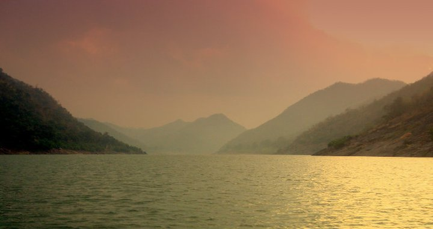
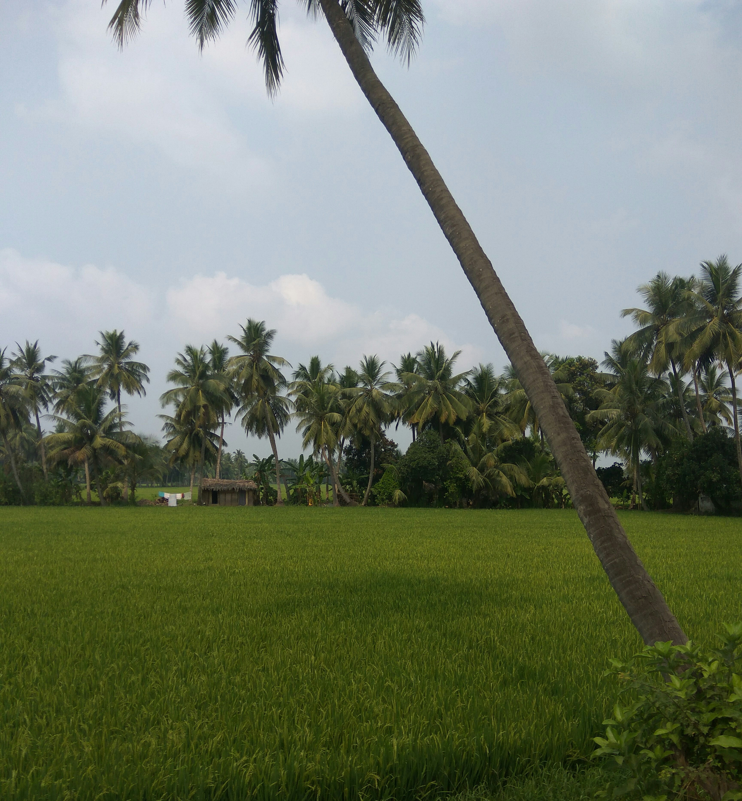
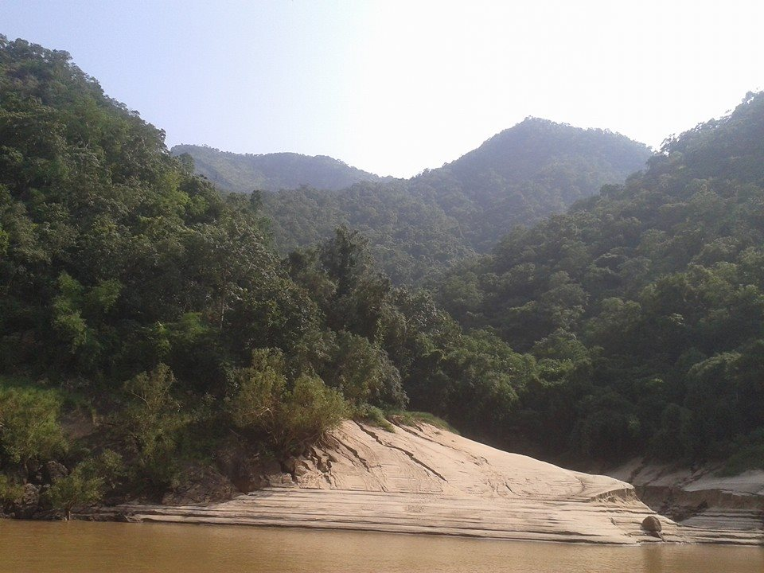

Godavari

- It flows through hilly terrain of the
Eastern Ghats known as the Papi hills which explains the
narrowing of its bed as it flows through a gorge for a few km,
only to re-widen at Polavaram.
- Before crossing the Papi hills,
it receives its last major tributary Sabari River on its left bank.
- The river upon reaching the plains begins to widen out until
it reaches Rajamahendravaram City.
Konaseema

- Konaseema is a group of islands between the tributaries of the Godavari River in the East Godavari District of Andhra Pradesh in southern India.
- It is nicknamed "God’s Own Creation" due to similarities with the Kerala backwaters.
- the Vasishta splits into two branches, the Vasishta
and the Vainateya. These branches form a delta 170 km (105 mi) long along the coast of the
Bay of Bengal. This delta makes up the Konaseema region
Papikondalu

- It is located in East Godavari and West Godavari districts of Andhra Pradesh,
and covers an area of 1,012.86 km2.
- It is an Important Bird and Biodiversity
Area and home to some endangered species of flora and fauna.
- No part of Papikonda remains
outside East and West Godavari districts after 2014 and after the construction of Polavaram Dam.